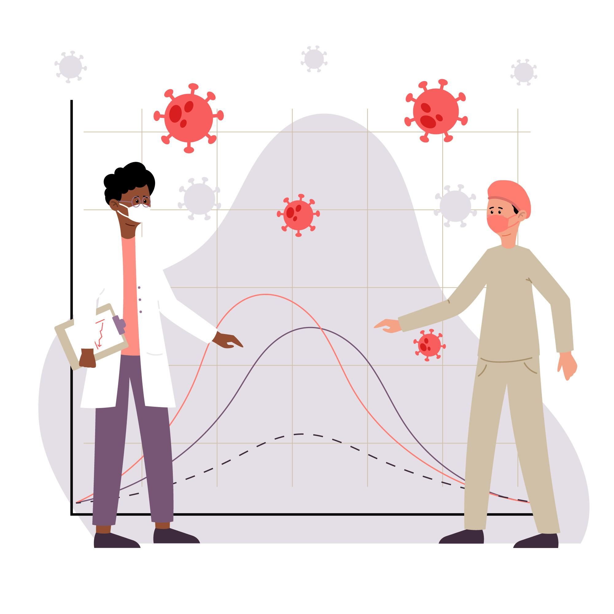

If you could sum up a well balanced healthy diet in one word, that word would be “variety.”
“Actually, a healthy diet isn’t really about selecting and choosing ‘best’ foods or focusing on ‘superfoods.’ It’s about eating a wide variety of whole, healthy foods”
“Eating a balanced diet is an issue of getting the balance right in the foods, colours and macronutrients. Because that’s what will allow you to get all the nutrients and the vitamins that your body needs.”
That is, it is not a matter of "balancing out" your double cheeseburger and fries with a pile of blueberries. It is a matter of eating an eating pattern that includes all food groups in healthful amounts
A great source of energy, carbohydrates should make up around 60% of your diet. This is where most of your energy comes from if you stay busy throughout the day; eat lots of carbohydrate rich food sources such as rice, pasta, potatoes, and wheat. This is a crucial part of any healthy diet.
There are just so many vitamins that are essential nowadays but especially note the intake of the following,
It is better to consume the multivitamins for these four, but it is better to get them from fruits and vegetables.
Minerals assist in liberating energy from foodstuffs, as well as acting on the organs to stimulate growth. For example, iron assists in energy, and calcium in developing bones and teeth. Again, there are numerous minerals today, but the most vital ones in your diet are iodine, potassium, sodium, and the aforementioned.
Unsaturated fats Most people avoid fat, thinking that it makes one heavy, but nothing is farther from the truth. Good fat, or fat from a good source, comprises dairy, fish, and meat.. They are mostly tasked with keeping the body warm, in addition to the absorption of vitamins. They promote steady release of energy, which is perfect for distance runners. People are all advised to consume roughly 70 grams each day.
The second primary component of a balanced diet is protein, and that is found mainly from lean meat, yet dietary evidence proves you can also get protein from non-meat sources. Protein is primarily utilized for growing skin, hair, and muscle. The the daily maximum is 50 grams for an average adult.
Diet and Nutrition Advisor Water All of the healthy balanced diet lists contain only 6, but a total of 7 is mentioned here by including water in the list. The truth is that practically no one pays attention to the contribution of water to the diet. Fizzy, tea, coffee, and juice drinks cannot provide the same goodness that water can. It makes the body hydrated and facilitates all the other mentioned items to work. The minimum should be 8 glasses daily. Those are the 7 components of balanced diet, prescribing exactly what each meal should be composed of it in order to maximize your health. The great news is, there are meal recipes that are patterned after the balanced healthy diet concept, so you don’t have to do it all yourself.

Nutrition is a key factor in human growth, development, and health at all stages of life. Foods and nutrients our body requires differ as we age from infancy to adulthood. Meeting nutritional needs at every stage allows people to work at their best level, physically, mentally, and emotionally. Both excesses and deficiencies of specific nutrients in early life do have a lasting impact on healthcare later in life. This article will discuss the primary nutritional requirements in the infancy, childhood, adolescence, adulthood, and old age. An understanding of age-wise nutritional requirements and following proper dietary practices at every stage is essential in order to lead a healthy life.
As the child matures from toddler to pre-adolescence, nutritional requirements evolve to meet this busy period of growth and development. Priorities include sustaining good eating habits begun in infancy and meeting energy and nutrient requirements.
The key is energy, protein, fruit, vegetables, whole grains, dairy, and fat balance. Selective eating is the norm but facilitating range and sustained provision of new foods assists children in expanding food like. Parent modeling of healthy eating also contributes.
Because growth slows down in the years approaching puberty, children's calorie needs are lower compared to infancy. Nonetheless, diet remains important in avoiding deficiency of nutrients and providing continuous energy for school and activity. Habituating to such practice prevents conditions like obesity, tooth decay, and anemia in the long run. Frequent attendance at the pediatrician to monitor growth and manage nutritional conditions is recommended.
Adulthood is the life stage with the greatest longevity and optimum nutrition supports health and function during those years. Adult nutrition priorities include: maintaining a healthy weight, getting adequate nutrients from foods, and reducing risk for chronic disease.
Besides calories, adults must achieve recommended daily levels of,
A healthy eating pattern with an emphasis on vegetables, fruits, whole grains, lean protein, low-fat dairy foods, and healthy fats fats maintains health during adulthood. Portion sizes and meal planning maintain calorie needs and nutrient balance. Regular exercise and activity are also essential.
Eating according to dietary guidelines helps adults maintain their body weight at a healthy level, prevent chronic diseases like heart disease and diabetes, promote bone health, and reduce cancer risk. Adults' eating habits also set the example for the next generation.
Adulthood is the life stage with the greatest longevity and optimum nutrition supports health and function during those years. Adult nutrition priorities include: maintaining the healthy weight, getting adequate nutrients from foods, and reducing risk for chronic disease.
Besides calories, adults must achieve recommended daily levels of,
A healthy eating pattern with an emphasis on vegetables, fruits, whole grains, lean protein, low-fat dairy foods, and healthy fats maintains health during adulthood. Portion sizes and meal planning maintain calorie needs and nutrient balance. Regular exercise and activity are also essential.
The role of nutrition in chronic diseases such as diabetes, obesity, heart disease, and stroke remains an area of interest for scientists. This is based on the fact that the intake of the diet is a reversible risk factor. The composition of diet, the quantities and sources of macronutrients, and micronutrients are some of the largest contributors to chronic diseases.
The benefits of nutritional interventions on chronic diseases have been well documented, though there are differences among scientists in how they generally affect them. Evaluations of the role of nutrition in the chronic diseases rely on the effect of diet on body weight, composition, glycemia, and insulin excursions, and vascular remodelling. The effect of diet on modulating gut microbiota dysbiosis is a new area of research.
This Special Issue, "Nutrition in Chronic Conditions", aims to review the influence of nutrition on the aetiology, management, and treatment of chronic diseases. This is a Special Issue comprises 11 original articles from middle- and high-income countries, 3 systematic reviews with meta-analysis, and 3 literature reviews. This editorial provides a general overview of the key findings of the papers included in this Special Issue. These articles are categorized under seven headings: the effect of diet on glucose and insulin metabolism; gut health; brain and cognitive impairment; infections, chronic diseases, malnutrition, and all cause mortality; obesity and dietary components in postmenopausal women; non-alcoholic fatty liver disease in mice, i.e., coffee consumption; chronic disease and COVID-19 infection.

Healthy eating is essential to overall health and the prevention of chronic disease. Developing healthy eating habits requires more than just choosing healthy foods it's a question of developing a a balanced, regular, and mindful eating routine. Healthy eating patterns, such as not skipping breakfast and eating at the same time each day, maintain blood sugar and energy levels even throughout the day. A well-balanced plate will contain a variety of fruits, vegetables, whole grains, lean protein, and healthy fats in their proper proportions. Mindful eating—paying attention to hunger, eating slowly, and avoiding the TV or other distractions—can prevent overeating and help digestion. Plenty of water, advance preparation, reading food labels, and preparing healthy snacking alternatives are also components of a healthy lifestyle. Most importantly, healthy eating needs to be flexible and enjoyable, with room for the odd indulgence in moderation and an acceptance of cultural food decisions. These habits developed slowly can lead to physical and mental wellbeing in the long term.